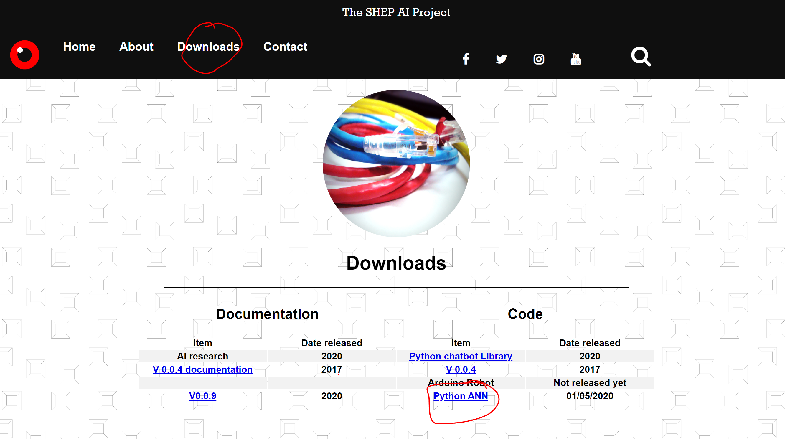
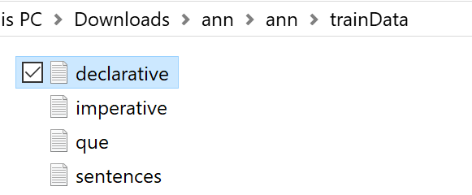
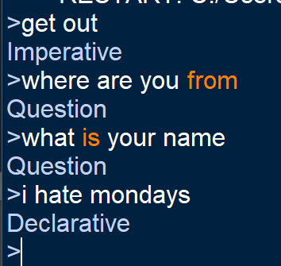

Simple artificial neural network
Posted 08/August/2020
Overview
Artificial neural networks are extremely powerful parts of computer science. They are used to develop all sorts of intelligent systems. The issue is they are very complex to get your head round and there is a lot of maths involved… too much maths. Wouldn’t it be cool if you could have an artificial neural network which could sort complex information?
In this tutorial you will be introduced to our simple abstract neural network code and learn to implement this with your own system. We will be training the network to recognize sentences and the type of sentence it is (question or statement).
Concept
Instead of complex maths, we have taken it down to a very abstract level. Let’s think about a neuron, we have a cell body, axons and dendrites. Neurons communicate via action potentials triggering the release of neurotransmitters/ signals. Neural pathways will strengthen if used a lot. For example the first time you ride a bike you will struggle as the coordination is not yet connected, but the more you do it the stronger the pathways become… this then makes you better at riding bikes.This network works in the same way. Data is trained in with the known answer, for example:
"what is your name" = question
"what is the capital of England" = question
"get out my way" = statement
"get me some tea" = statement
There is not a lot of data here that we are training on, so the system will not be accurate with other questions and statements such as "how are you". What it will do is learn that "what is" being at the front of a sentence makes a question, and "get" at the beginning makes a statement. Each word must be trained in with the position of it in a sentence (encoding the information). The network then changes the strengths of each connection based on how much it happens.
Downloading
Firstly, we will download the python ANN code from our website. This is done by going to downloads and pressing the Python ANN link. This will download the package. Alternatively, if you are using Linux you can type:

Training
Next, we will train the data to recognise what we want it to. Within the package we have provided some training data for you to use.
Within these files are sentences separated by newline characters. We will be using these to train the neural network. Firstly, we will create the object in python. In the same file as the file "Artificial_neural_network.py" create your own file. In this we will type:
cell = CellBody("phrases/") #name of folder you want to save it in
ques=file.read()
file.close()
file=open("trainData/imperative.txt","r")
imp=file.read()
file.close()
file=open("trainData/declarative.txt","r")
dec=file.read()
file.close()
ques=ques.lower()
imp=imp.lower()
dec=dec.lower()
ques=ques.replace(".","").replace(",","").replace(":","")
ques=ques.replace("?","").replace("/","").replace("-","")
imp=imp.replace(".","").replace(",","").replace(":","") imp=imp.replace("?","").replace("/","").replace("-","")
dec=dec.replace(".","").replace(",","").replace(":","") dec=dec.replace("?","").replace("/","").replace("-","")
ques=ques.split("\n")
imp=imp.split("\n")
dec=dec.split("\n")
for i in ques[0:500]: layer1=[i] layer2=[] pos=0 for j in i.split(): layer2.append(j+"-P-"+str(pos)) pos+=1 cell.trainData(layer1,layer2,"Question") for i in imp: layer1=[i+".txt"] layer2=[] pos=0 for j in i.split(): layer2.append(j+"-P-"+str(pos)) pos+=1 cell.trainData(layer1,layer2,"Imperative") for i in dec: layer1=[i+".txt"] layer2=[] pos=0 for j in i.split(): layer2.append(j+"-P-"+str(pos)) pos+=1 cell.trainData(layer1,layer2,"Declarative")
The training may take a bit of time depending how much data you are training in.
Testing
To test out our network we will use the following code. It loops through and predicts what type of sentence you have entered:
while True:
sentence=input(">")
layer1=[sentence+".txt"]
layer2=[]
pos=0
for j in sentence.split():
layer2.append(j+"-P-"+str(pos))
pos+=1
print(cell.interact(layer1,layer2))

This is not always acurate. You could go further and use the negative feedback options in the ANN library.
Check out our video tutorial on how to do this project, and take it further.